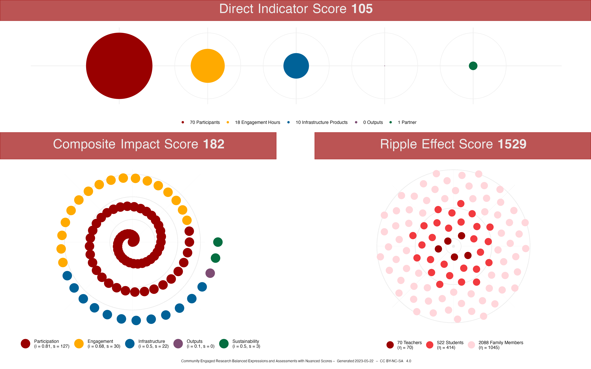
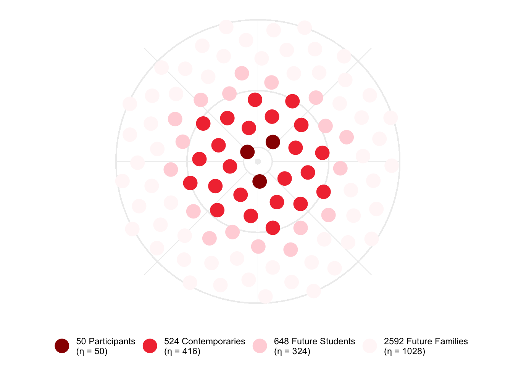

CER-BEANS: Community Engaged Research Balanced Expressions and Assessments with Nuanced Scores
A Framework for Constructing Quantitative Metrics for Community Engaged Research Projects
![]()
Introduction
“Every little bean must be heard as well as seen!”
— Erich Maria Remarque, All Quiet on the Western Front

Quantitative measures capture only a small piece of the (bean) pie, but people in academia ❤️ love ❤️ putting numbers on things and counting them (beans).
Rather than sitting back and stewing like a pot of vegetarian chili while fretting about whether or not faculty committees and administrators will count the kinds of beans I hope they would count, I decided to create my own set of beans for them to count.
Therefore:
Community Engaged Research Balanced Expressions and Assessments with Nuanced Scores (CER-BEANS)
I was inspired by the Altmetric badge, so I want to make sure to create a system of beans that is:
- Easy to grok and nice to look at.
- Authentic and meaningful to the work and experiences of community engaged researchers.
- Usable as a critical framing for the kind of work community engaged researchers should be focusing on.
- Translatable, transferable, robust, resilient, dynamic, and extensible.
How ’bout these beans?

Pretty radicle, eh?
I am open to collaboration, dialogue, and disagreement. You can even open an issue if you’d like to make it official. Contributions are welcomed, please read the Code of Conduct.
Identifying the Metrics
“You never cook onions with your beans. That’s a recipe for tear gas.”
— Justin Swapp, The Shadow’s Servant

When evaluating community-engaged programs, it’s important to consider various metrics that assess different aspects of the program’s effectiveness and impact.
It is important to remember a number, a score, or even a collection or bean hill of scores or numbers, do not tell the whole story of your community engaged research. This framework is provided to help you tell that story using a system that is easily recognizable and considered a valid form of evidence.
These numbers are a guidepost for your readers–or more likely–your evaluators.
Now that I’ve provided the warning, remember that academics are first and foremost makers of bean stalks: we are trained to make cases and construct narratives. Here are some tips for you to consider about what CER-BEANS does provide for you as you construct a narrative around your work:
A builder, like yourself.
– Edna St. Vincent Millay, The Bean-Stalk
ü™û Reflection: It provides an overall reflection on your work and where you have focused your energies. CER-BEANS gives you an indication of the impact your work has had, allowing you to discuss your successes.
üì∏ Snapshot: It provides a snapshot of where you are in a longer process, what has worked well so far, and where you will be focusing your efforts in the near future.
üó∫Ô∏è Map: It provides a rough map of where you and your collaborators, partners, and participants can take the work moving forward.
CER-BEANS focuses on five categories and they each result in an category score. Each of the category scores contribute to the overall score. These are the five categories:
- Participants
- Engagement
- Infrastructures
- Outputs
- Sustainability
Each of the category scores (\(S_C\)) follow a predictable pattern, that includes an impact number (\(I_C\)) that is amplified by a set of category component ratings (\(R_C\), individual ratings represented by \(r_{C1} \ldots r_C\)). This is the general formula for a category score:
\[ S_C = I_C \left(1 + \frac{\sum r_{C_1} \ldots r_{C_n}}{|R_C|}\right) \]
The process for computing each of the category scores is essentially calculating the average for the ratings in the category and then adding 1 to this average since the ratings are between 0 and 1 and only numbers greater than 1 will amplify things. The amplifier score is then multiplied by the impact number, which can be the number of participants, contact hours, institutional partners, etc.
The categories contribute to the overall score (\(S_O\)) as a straight-forward summation of all the category scores, where \(s\) represents the category scores, \(x\) represents the set of categories, and \(n\) is the number of categories:
\[ S_O = \sum_{x=1}^n s_x \]
This overall score is similar to the Altmetric Attention Score in that it is a weighted count. The overall score increases
Each of these categories and their components are described in some detail below. The idea, the math, the concepts, are all licensed under a CC BY-SA 4.0 license, so you are welcome to take these ideas and adapt them to your particular needs and preferences (as long as you give credit where credit is due and share your adapted work alike).
Participants
People Involved
| marginalized_proportions | intersectionally_marginalized | participants_value |
|---|---|---|
| No Marginalized Participants | No Intersectionally Marginalized Participants | 0.10 |
| A Few Marginalized Participants | A Few Intersectionally Marginalized Participants | 0.25 |
| Some Marginalized Participants | Some Intersectionally Marginalized Participants | 0.33 |
| Just Under Half Marginalized Participants | Just Under Half Intersectionally Marginalized Participants | 0.40 |
| About Half Marginalized Participants | About Half Intersectionally Marginalized Participants | 0.50 |
| Just Over Half Marginalized Participants | Just Over Half Intersectionally Marginalized Participants | 0.75 |
| Mostly Marginalized Participants | Mostly Marginalized Intersectionally Participants | 0.85 |
| Predominantly Marginalized Participants | Predominantly Intersectionally Marginalized Participants | 0.90 |
| Nearly All Marginalized Participants | Nearly All Intersectionally Marginalized Participants | 0.95 |
| All Marginalized Participants | All Marginalized Intersectionally Participants | 1.00 |
Number of Participants
How many participants involved? This is \(p_n\). For this example, there are 6 participants.
Marginalized Proportions Score
How many of the participants represent and come from marginalized identities and communities? This is \(p_m\).
Also, are you working directly with these marginalized participants, or are you working with others (such as teachers or health care workers) who are working with these identities and communities?
Intersectionally Marginalized Score
Calculate Participation Score
\[ p_s = p_n \left( 1 + \frac{(\beta_m \cdot p_m + \beta_i \cdot p_i)}{2} \right) \]
Engagement
Number of contact hours \(e_h\).
| frequency | duration | value |
|---|---|---|
| Once | One Day | 0.10 |
| Once Per Year | Less Than A Week | 0.25 |
| Several Times Per Year | One Week | 0.33 |
| Every Other Month | 2-3 Weeks | 0.40 |
| Once Per Month | One Month | 0.50 |
| Every Other Week | One Semester | 0.75 |
| Once Per Week | One Year | 0.85 |
| 2-4 Times Per Week | 2-3 Years | 0.90 |
| 5 Times Per Week | 3-10 Years | 0.95 |
| Daily | 10+ Years | 1.00 |
Engagement Hours
Frequency
Duration
Calculate Engagement Score
\[ e_s = e_h \left(1 + \frac{(e_d + e_f)}{2}\right) \]
Infrastructure Score
| purpose | co_construction | value |
|---|---|---|
| Promoting Efficiency Only | Initiation and Construction From One Party | 0.10 |
| Promoting Predominantly Efficiency And Recognizing Plurality and Multivocality | Initiation and Construction From One Party With Feedback By Another | 0.50 |
| Promoting Mostly Efficiency And Recognizing Plurality and Multivocality | Initiation From One Party and Construction By Another | 0.90 |
| Promoting Mostly Efficiency And Recognizing Plurality, Multivocality, and Honor | Initiated and Constructed Mostly Equitably | 0.95 |
| Promoting Efficiency, Plurality, Multivocality, and Honor Equitably | Initiated and Constructed Equitably | 1.00 |
Number of Intrastructure/Intermediate Products
Infrastructure Purpose
Infrastructure Co-Construction
Calculate Infrastructure Score
\[ i_s = i_p \left(1 + \frac{(i_u + i_c)}{2}\right) \]
Outputs Score
| venues | inclusion | value |
|---|---|---|
| Only One Type of Venue | No Inclusion | 0.10 |
| Predominantly One Type of Venue | Member Check Opportunities | 0.50 |
| Mostly One Type of Venue | Inclusion in Writing | 0.90 |
| Almost Even Mix of Venues | Inclusion in Data Curation, Analysis, and Writing | 0.95 |
| Even Mix of Venues | Full Partnership | 1.00 |
Number of Outputs Products
Distribution of Venues
Inclusion of Participants and Partners
Calculate Outputs Score
\[ o_s = o_p \left(1 + \frac{(o_v + o_i)}{2}\right) \]
Sustainability
| responsibility | material | value |
|---|---|---|
| Responsibility Distributed to One Partner | No Material Support | 0.10 |
| Responsibility Predominantly Distributed to One Partner | Material Support Predominantly Through One Partner | 0.50 |
| Responsibility Mostly Distributed to One or More Partners | Material Support Mostly Through One or More Partners | 0.90 |
| Almost Equitable Distribution of Responsibility Across Partners | Material Support Almost Equitably Distributed Across Partners | 0.95 |
| Equitable Distribution of Responsibility Across Partners | Equitable Material Support Across Partners | 1.00 |
Number of Institutional Partners
Distribution of Responsibility
Distribution of Material Support
Calculate Sustainability Score
\[ s_s = s_p \left(1 + \frac{(s_r + s_m)}{2}\right) \]
Ripple Effects
mu_ripple <- 0.55\[ \lambda_r = 10 \cdot \frac{\log(\mu_r + 1)}{d_r \cdot \log(p_n + 1)} \]
\[ \eta_r = {\lambda_r \cdot p_\delta \mid \delta \in {1, 2, \ldots, n}} \]

Overall Score
“Red Beans and Ricely Yours”
– Louis Armstrong

\[ S_O = \sum_{x=1}^n s_x \]
The Overall Score \(S_O\) for the STEM Studio is 60 while the Overall Score \(S_O\) for the Professional Development is 174.
Overall Representation
Professional Development Example
An example of a detailed badge for a professional development program at a school. This badge contains multiple levels of information including the overall score, the ripple effect score, and direct indicators.
Reuse
Citation
@misc{fprice2023,
author = {Jeremy F Price},
title = {CER-BEANS: {Community} {Engaged} {Research} {Balanced}
{Expressions} and {Assessments} with {Nuanced} {Scores}},
date = {2023},
url = {https://github.com/jeremyfprice/cer-beans},
langid = {en}
}